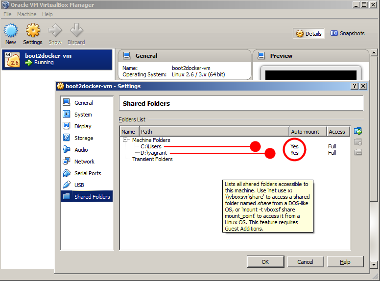
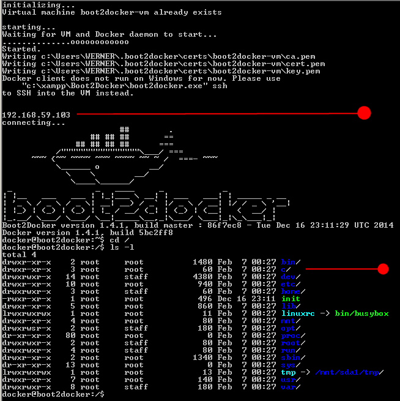
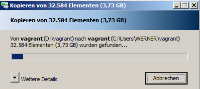
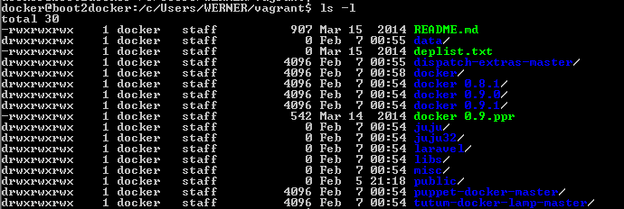

First steps
I decided to jot down my experiences with Docker after noticing that I had forgotten most of the details I was very proficient with a year ago.
Back then when I quit, boot2docker had just been invented, but I didn't use it anymore, because other things kept me busy. Consequently, when I started using Docker, I had to set up VirtualBox and Vagrant manually. It's all different now, very easy and much more efficiently.
Also, I set up a new machine with Windows 7 64-bit recently, so everything I did last year had to be moved to the new machine. As I worked with Dockerfiles, as you should, I hope to be able to reconstruct everything quite easily. But, I remembered that switching from Windows to Vagrant was vital for my workflow. How to do that with boot2docker?
I googled a bit and found instructions which seemed to be quite complicated. I tried them nevertheless, but they didn't work for me.
For example: Sharing a Windows folder with the Boot2Docker VM, replacing the boot2docker.iso to a not officially supported version.
This new version has the VirtualBox guest additions which I knew from my past experience, so this seemed reasonable, although it didn't quite understand what that meant. But I didn't see this new logo which should confirm these guest additions. I checked and rechecked and after 3 attempts, I gave up.

Another approach to solve this problem was presented by several people, among them the Tutum guys: How to Use Docker on Windows.
This solution looks technically sleek, but again I didn't manage to make it work. Also, a few words to explain what WINDOWS_IP should be and how to find it as well as WINDOWS_USERNAME wouldn't have been bad -- I understand they want to help the reader, don't they?
I found out I was asked for a password for my WINDOWS_USERNAME, which set me at a loss: I don't use a password, so I introduced a password just to see if this would help, but I had no luck. So again frustration struck.
wget http://distro.ibiblio.org/tinycorelinux/5.x/x86/tcz/cifs-utils.tcz
tce-load -i cifs-utils.tcz
mkdir /mnt/sharefolder
sudo mount -t cifs //WINDOWS_IP/shared /mnt/sharefolder -o username=WINDOWS_USERNAME
There should be a very simple solution according to VirtualBox. If you start the GUI, click settings of the running boot2docker-vm. There you will find an entry at the end of the list called Shared Folders. It is very easy to change this according to your needs.
For example, I wanted to set up a correspondence between my Windows folder D:\vagrant and a folder within the VirtualBox. Upon choosing this folder, VirtualBox associated a folder vagrant, so this looked promising.
It didn't work with the running virtual machine, though, so -- if I remember correctly -- I exited, deleted the virtual machine and restarted. Unfortunately, VirtualBox had reset my setting back to C:\Users.
Next I exited and restarted and VirtualBox showed my corrected setting D:\vagrant, but inside I didn't have the expected folder vagrant, but again folder c with subfolder Users etc., which is the default setting.
So -- before we proceed, let me state this very clearly -- by way of construction VirtualBox gives you a common Windows folder for free -- something a lot of people want to have, according to Google, and nobody seems to notice that it's already there.
The only thing I wanted to have is a different folder. It's a matter of taste more or less, but if you think about it, the right structure helps you keep your thoughts straight. You wouldn't like to put things in areas they don't belong, so this isn't a small deal after all. Shouldn't be too complicated, as they offer it already. After all its an Oracle product. Should work as advertised.
I still experimented, but nothing changed, and after a soft reboot, I expected to see C:\Users again, but surprisingly VirtualBox showed two shared folders, both C:\Users and D:\vagrant.

Alas, still I don't see a folder vagrant within VirtualBox.

By the way, you can see the IP address the VirtualBox can be addressed in this opening screen: 192.168.59.103. It may happen that this number changes to 192.168.59.104, if you exit and restart, so if you get a connection error in your browser calling 192.168.59.103, watch here.
I finally gave up and decided to move the content of my vagrant folder to C:\Users\WERNER\vagrant, a subdirectory I created in my user folder, WERNER being the current user name on my new 64-bit machine, having 32584 elements with 3,73 GB -- I have no idea, what I have done there, but it sure is proof that I invested an awful lot of time and energy back then.

And here you can see the directory structure I set up a year ago; I started with Docker 0.8.1, used 0.9.0 and finally 0.9.1. Tutum was very new then, I was interested in LAMP, and the ppr file tells you that my favorite editor is PSPad -- the only one I know capable of correctly presenting PHP class structures -- this is a PSPad project file. In addition you can see, that I am a late hour worker and that the ppr file has been created in March 2014.

As far as I remember, I managed to set up a complex LAMP project with several containers, each one for memcached, Apache/PHP, and 3 for MySQL, just as an exercise. MaxScale was very fresh then, I planned to construct a database load balancing with it, there were alternatives also for this purpose the name of which I don't remember right now, but none of them produced satisfying results. And then something else required my attention full-time so that I dropped the whole study for the time being.
I came back now because I wanted to investigate Chicago Boss, an Erlang framework which should run in Windows but didn't. So my idea was to continue in VirtualBox. Also, I wanted to know which database would be the best for me to use, and stumbled upon VoltDB which had a demonstration using boot2docker, so I was already set. And then I realized that I had forgotten everything about VirtualBox and Docker, so I stepped back and started with the Docker tutorial again, which has improved also a lot.
Enough for today, let me tell you tomorrow how to cope with the ssh error some people were complaining of, which hit me as well.